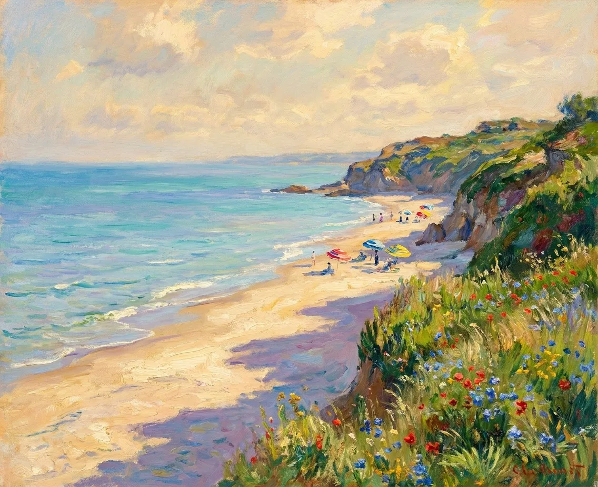
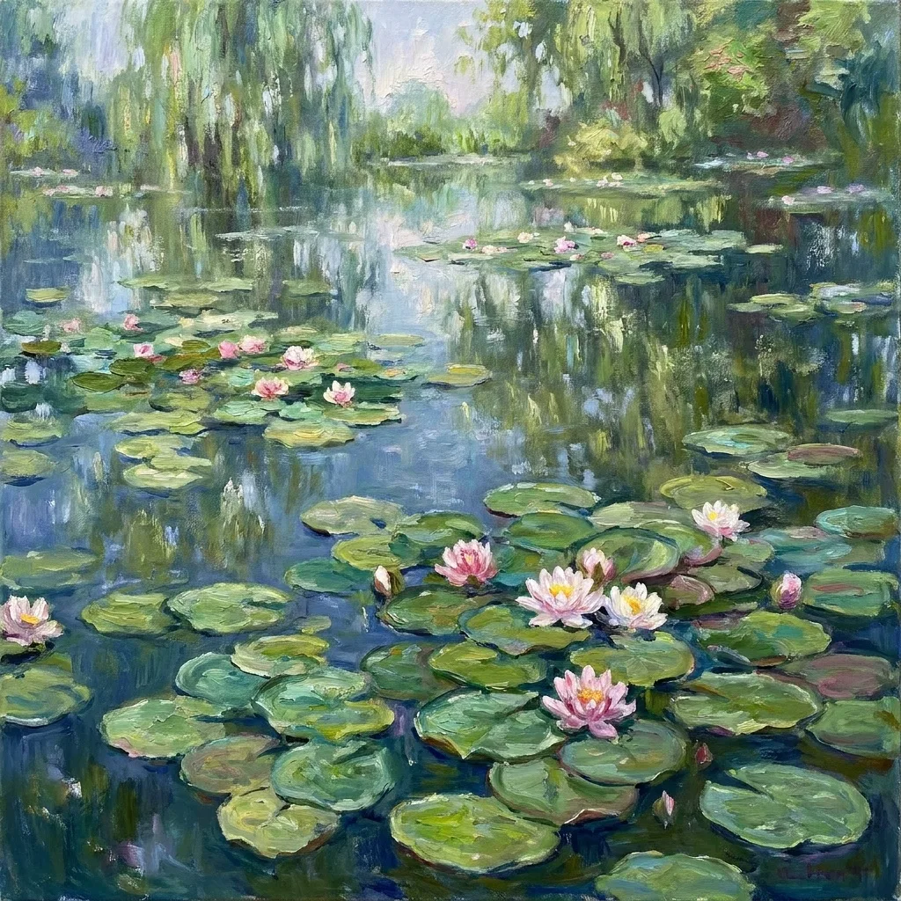
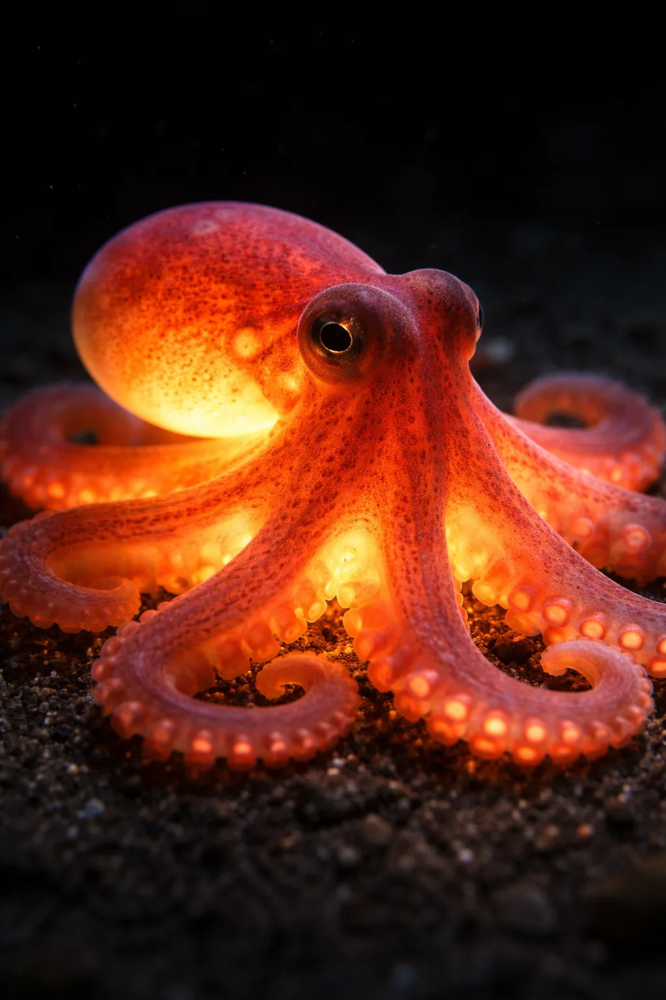
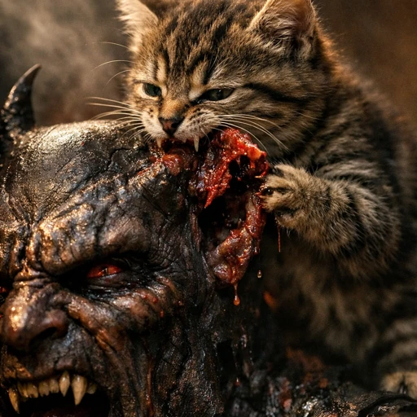

Чернила и вода
WebGL / ЭкспериментСимуляция чернил в воде прямо в браузере. Исследование движения, цвета и того, как физика становится изображением.
Посмотреть проект ↗Void Studio . Lab / Избранное
Инструменты, визуальные эксперименты
и вещи, сделанные из любопытства.
Симуляция чернил в воде прямо в браузере. Исследование движения, цвета и того, как физика становится изображением.
Посмотреть проект ↗
Иллюстрация / Void StudioSurfВолны, ветер, приливы и камеры побережья Пхукета. Проект для простого вопроса: стоит ли ехать на серфинг сейчас?
Открыть Surf ↗


Эскиз портфолио. Обложки проектов — иллюстрации для композиции; в финальной версии здесь будут демонстрации самих продуктов.